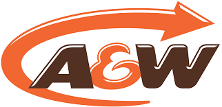
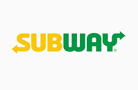
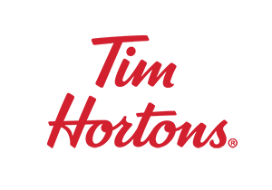

My Top 5 Fast Food Restaurants
McDonalds

McDonald's is the world's largest restaurant chain by revenue,[10] serving over 69 million customers daily in over 100 countries[11] across 37,855 outlets as of 2018.[12][13] Although McDonald's is best known for its hamburgers, cheeseburgers and french fries, they feature chicken products, breakfast items, soft drinks, milkshakes, wraps, and desserts. In response to changing consumer tastes and a negative backlash because of the unhealthiness of their food,[14] the company has added to its menu salads, fish, smoothies, and fruit. The McDonald's Corporation revenues come from the rent, royalties, and fees paid by the franchisees, as well as sales in company-operated restaurants. According to two reports published in 2018, McDonald's is the world's second-largest private employer with 1.7 million employees (behind Walmart with 2.3 million employees).[15][16]
McDonalds
A&W

A&W Restaurants, Inc. is an American chain of fast-food restaurants distinguished by its burgers, draft root beer and root beer floats.[5][6] Its origins date back to 1919 when Roy W. Allen set up a roadside drink stand to offer a new thick and creamy drink, root beer, at a parade honoring returning World War I veterans in Lodi, California.[7][5] Allen's employee Frank Wright partnered with him in 1922 and they founded their first restaurant in Sacramento, California, in 1923.[1] The company name was taken respectively from the initials of their last names—Allen and Wright. The company became famous in the United States for its "frosty mugs," where the mugs would be kept in the freezer and eventually get filled with A&W Root Beer before they were served to customers.
Subway

Subway is an American privately held restaurant franchise that primarily sells submarine sandwiches (subs) and salads. It is one of the fastest-growing franchises in the world[2] and, as of October 2019, had 41,512 locations in more than 100 countries. More than half its locations (23,928 or 57.6%) are in the United States.[3][4][5] It also is the largest single-brand restaurant chain, and the largest restaurant operator, in the world.[6][7][8][9]
In 1965, Fred DeLuca borrowed $1,000 from friend Peter Buck to start "Pete's Super Submarines" in Bridgeport, Connecticut, and in the following year, they formed Doctor's Associates Inc. to oversee operations of the restaurants as the franchise expanded.[15][16] The holding company derives its name from DeLuca's goal to earn enough from the business to pay tuition for medical school, as well as Buck's having a doctorate in physics.[17] Doctor's Associates is not affiliated with, nor endorsed by, any medical organization.[18] In 1968, the sandwich shop was renamed "Subway".[15]
Tim Hortons

Tim Hortons Inc. is a Canadian-based multinational fast food restaurant chain. Based in Toronto, Tim Hortons serves coffee, doughnuts and other fast food items.[5][6] It is Canada's largest quick service restaurant chain, with 4,846 restaurants in 14 countries, by December 31, 2018.[4][7][8][9]
The company was founded in 1964 in Hamilton, Ontario, by Canadian hockey player Tim Horton (1930–1974) and Jim Charade[10] (1934–2009), after an initial venture in hamburger restaurants.[11][12] In 1967, Horton partnered with investor Ron Joyce (1930–2019), who assumed control over operations after Horton died in 1974. Joyce expanded the chain into a multi-billion dollar franchise. Charade left the organization in 1966 and briefly returned in 1970 and 1993 through 1996.
Burger King

Burger King (BK) is an American multinational chain of hamburger fast food restaurants. Headquartered in the unincorporated area of Miami-Dade County, Florida, the company was founded in 1953 as Insta-Burger King, a Jacksonville, Florida–based restaurant chain. After Insta-Burger King ran into financial difficulties in 1954, its two Miami-based franchisees David Edgerton and James McLamore purchased the company and renamed it "Burger King". Over the next half-century, the company changed hands four times, with its third set of owners, a partnership of TPG Capital, Bain Capital, and Goldman Sachs Capital Partners, taking it public in 2002. In late-2010, 3G Capital of Brazil acquired a majority stake in the company, in a deal valued at US$3.26 billion. The new owners promptly initiated a restructuring of the company to reverse its fortunes. 3G, along with partner Berkshire Hathaway, eventually merged the company with the Canadian-based doughnut chain Tim Hortons, under the auspices of a new Canadian-based parent company named Restaurant Brands International.
Burger King
My Poem
My Lists
My Table
My Learning Page